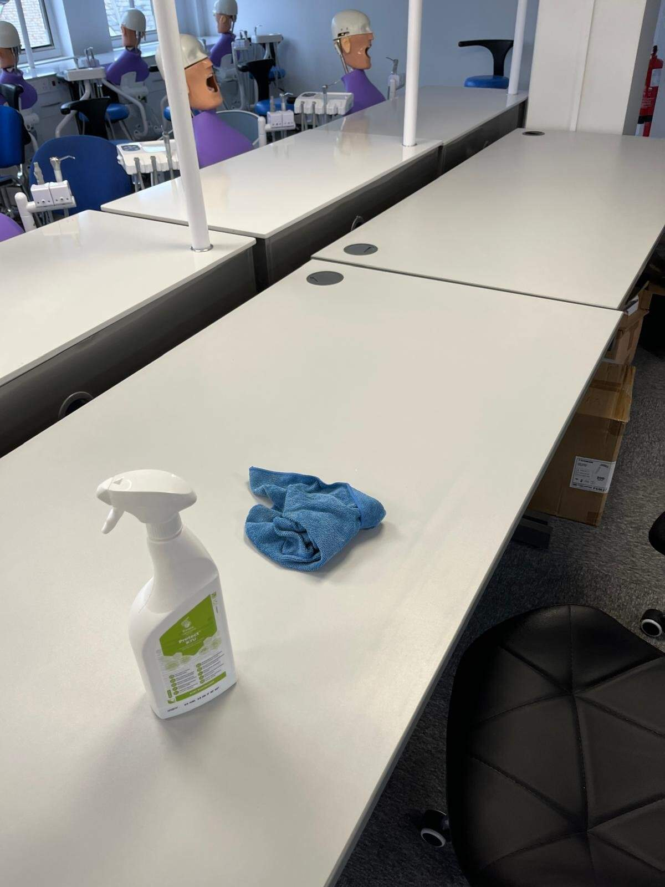
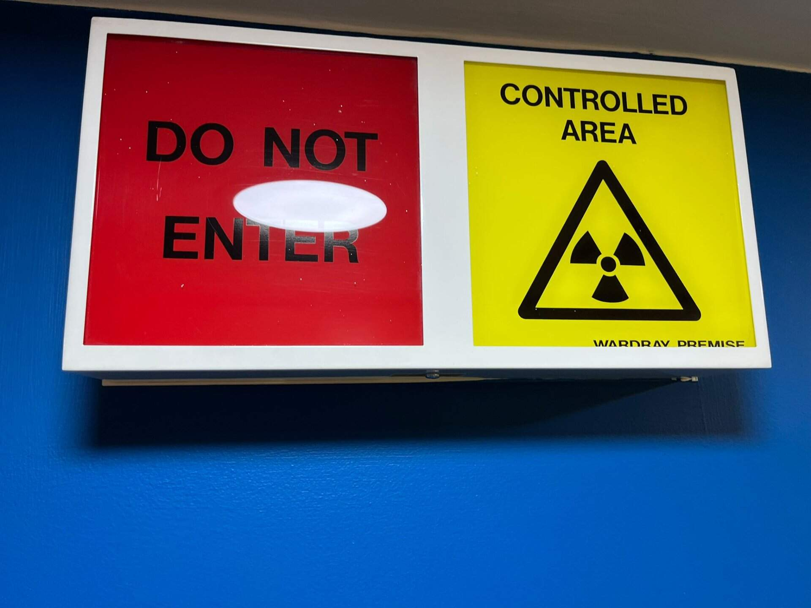
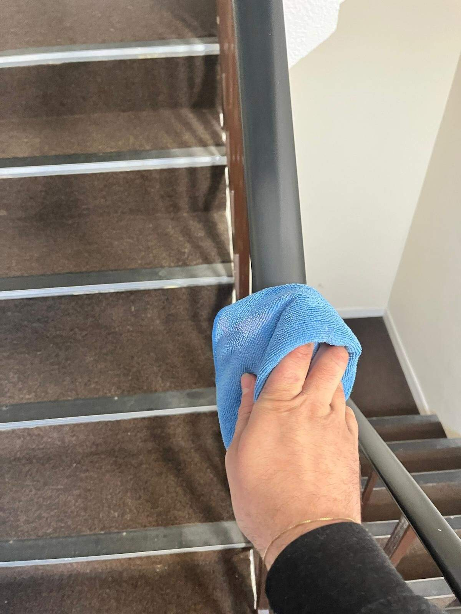
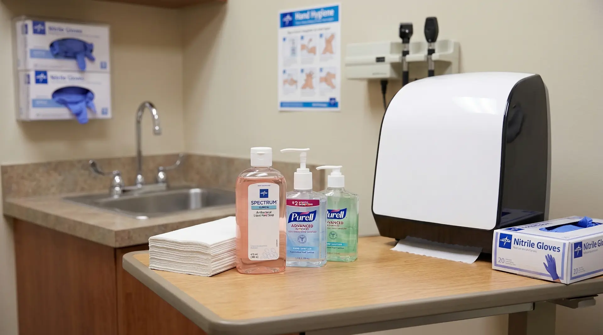

Rigorous Clinical Sanitation
Executing specialized medical cleaning protocols designed to completely break the chain of infection.
CQC Compliant Auditing
We provide fully documented cleaning schedules and digital audit logs, ensuring you have the precise records required to pass any unannounced CQC inspection flawlessly.

Color-Coded Systems
Strict adherence to the British Institute of Cleaning Science (BICSc) color-coding guidelines, ensuring equipment used in washrooms never enters clinical spaces.

Clinical Decontamination
Medical-grade disinfection of surgeries, operating rooms, and treatment areas utilizing specialized antiviral and antibacterial chemical agents.

High-Touch Sanitation
Targeted, high-frequency cleaning of critical touch points in waiting rooms and reception areas—such as door handles, chairs, and check-in desks—to protect arriving patients.

Biohazard Awareness
Our operatives are highly trained in clinical waste protocols, understanding how to safely navigate environments containing sharps bins and biohazard materials.

Consumables Management
We monitor and restock critical clinical consumables, including specialised antibacterial hand soaps, sanitiser stations, and medical-grade paper towel dispensers.